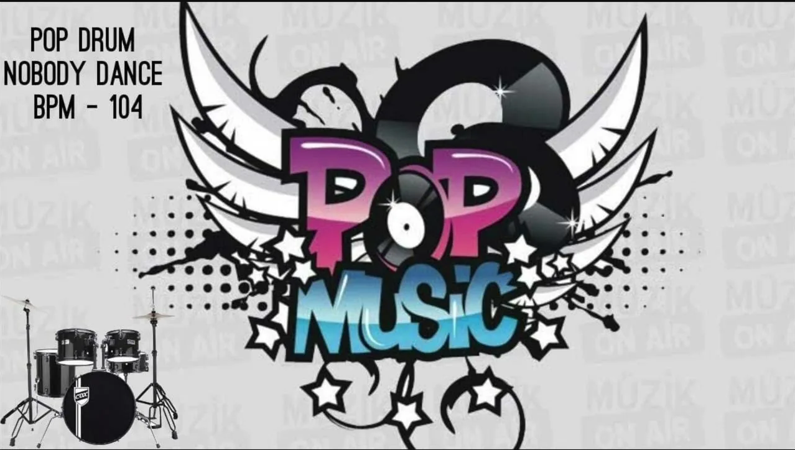

Поп
Поп-музыка — жанр популярной музыки, характеризующийся запоминающимися мелодиями, простыми гармониями и повторяющимися ритмами. Поп-музыка ориентирована на массовую аудиторию и часто включает элементы других жанров, таких как электронная музыка, рок и R&B.
История поп-музыки
Поп-музыка эволюционировала на протяжении десятилетий, начиная с Tin Pan Alley и биг-бендов в начале 20 века. В 1950-х годах рок-н-ролл оказал огромное влияние на поп-музыку. С появлением MTV в 1980-х годах визуальный аспект стал играть все большую роль. Сегодня поп-музыка — это глобальный феномен, охватывающий множество стилей и направлений.
Поджанры поп-музыки
- Синти-поп
- Электропоп
- Поп-рок
- Данс-поп
- K-pop
- J-pop
- Латино-поп
- R&B
Известные поп-исполнители
- INSTASAMKA
- Dabro
- Егор Крид
- BTS
Рекомендуемые альбомы
Будильник
Егор Крид
POPSTAR
INSTASAMKA